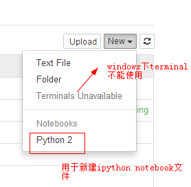
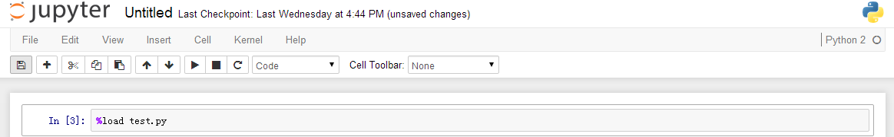
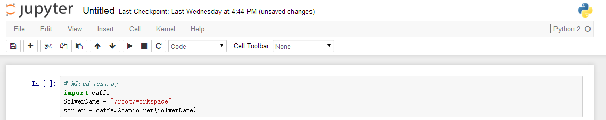
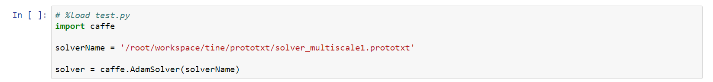
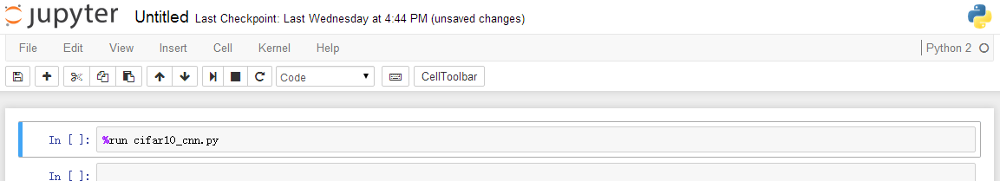
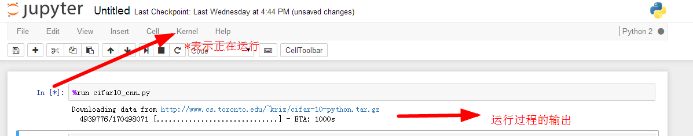

标签（空格分隔）： Python
Jupyter notebook )前身为IPython Notebook，学习时，可以找两者的教程
安装Jupyter Notebook的先决条件：已经安装了python（python 2.7 或者是python3.3）
具体的安装方法：
conda install jupyter这样安装完的jupyter不具有New a terminal的功能
经过各种查询才知道，原来是因为windows不具有terminal需要的TTY，所以，windows下的jupyter是不支持Terminal模式的，而且短期内也没有增加这种支持的计划

在其配置文件ipython_notebook_config.py中，有如下一句
# The directory to use for notebooks and kernels.
# c.NotebookApp.notebook_dir = u''
该句就是用来指定其工作空间的，例如，默认的工作空间是：用户名文件夹，例如，现在想要将工作空间变为D:\Jupyter，那么，需要做如下更改(要记得删掉注释#)
# The directory to use for notebooks and kernels.
c.NotebookApp.notebook_dir = u'D:\Jupyter'
注意：路径最后一级后面不要加符号“\”
jupyter notebook --generate-config在cmd中输入：ipython profile create
可以找到关于jupyter的配置文件的位置
执行当前cell，并自动跳到下一个cell：Shift Enter
执行当前cell，执行后不自动调转到下一个cell：Ctrl-Enter
是当前的cell进入编辑模式：Enter
退出当前cell的编辑模式：Esc
删除当前的cell：双D
为当前的cell加入line number：单L
将当前的cell转化为具有一级标题的maskdown：单1
将当前的cell转化为具有二级标题的maskdown：单2
将当前的cell转化为具有三级标题的maskdown：单3
为一行或者多行添加/取消注释：Crtl /
撤销对某个cell的删除：z
浏览器的各个Tab之间切换：Crtl PgUp和Crtl PgDn
快速跳转到首个cell：Crtl Home
快速跳转到最后一个cell：Crtl End
即导入代码到jupyter notebook的cell中
问题背景：有一个test.py文件，需要将其载入到jupyter的一个cell中
test.py内容如下：
import caffe
SolverName = "/root/workspace"
sovler = caffe.AdamSolver(SolverName)方法步骤：
（1）在需要导入该段代码的cell中输入
%load test.py #test.py是当前路径下的一个python文件
（2）运行该cell
利用快捷键“Shift+Enter”，可以看到如下结果：

（3）可以看到，运行后，%load test.py被自动加入了注释符号#，test.py中的所有代码都被load到了当前的cell中
在cell中输入%load http://.....，然后运行该cell，就会将load后面所对应地址的代码load到当前的cell中；
下面给出一个例子，导入matplotlib中的一个小例子color example code
首先，在想要导入该段代码的cell中输入
%load test.py #test.py是当前路径下的一个python文件然后，Shift+Enter运行，可以看到如下结果：

可以看到，运行后，%load test.py被自动加入了注释符号#，test.py中的所有代码都被load到了当前的cell中
%run file.pyfile.py为要运行的python程序，结果会显示在该cell中


具体方法为：在unitx command前面加入一个感叹号“！”
例子：
查看python版本：!python --version
运行python文件：!python myfile.py
还没有太明白，具体细节见The cell magics in IPython
即当前运行的代码所在的路径
具体方法：current_path = %pwd
这样得到的current_path就是当前工作路径的字符转
在Jupyter Notebook中，如果使用Matplotlib绘图，有时是弹不出图像框的，此时，可以在开头加入
%matplotlib inline要跳到的位置(the destination)
需要在要跳转到的位置添加下面语句:
<a id='the_destination'></a>这里的id取值任意赋值，下面在添加链接时要用
需要添加链接的文字（an internal hyperlink to the destination），即点击该处可以跳转到the destination，在需要添加链接的文字后面加入：
[需要添加连接的文字](#the_destination)下面是一个例子：
源码：
效果图：
conda install -c conda-forge jupyter_contrib_nbextensions 参考文献
[1] 为Jupyter Notebook添加目录